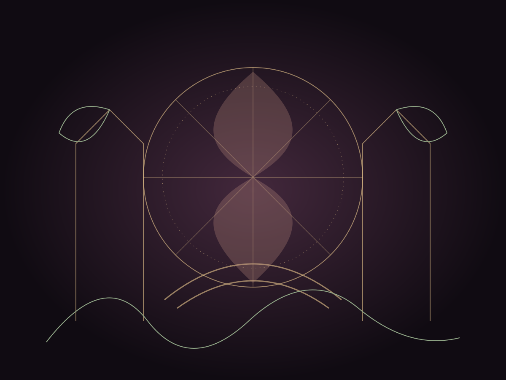

Every room starts in one-off mode. Choose “remembering locally” to save that room’s traces in this browser; “forget trace” erases them. Trace data stays in this browser; it is not sent to a server.

004Carnival of Thoughtpoke · spin · laugh005The Oceandrift · descend006Living Blueprintdraft · revise · animate007Dream Librarybrowse by atmosphere008Signal Forestlisten upward009Impossible Museuminvert · contradict010The Composergesture · sound · orbitFILMMallow Screening Roomwatch · gather · replay∞The Music Roomlisten · wander · remember